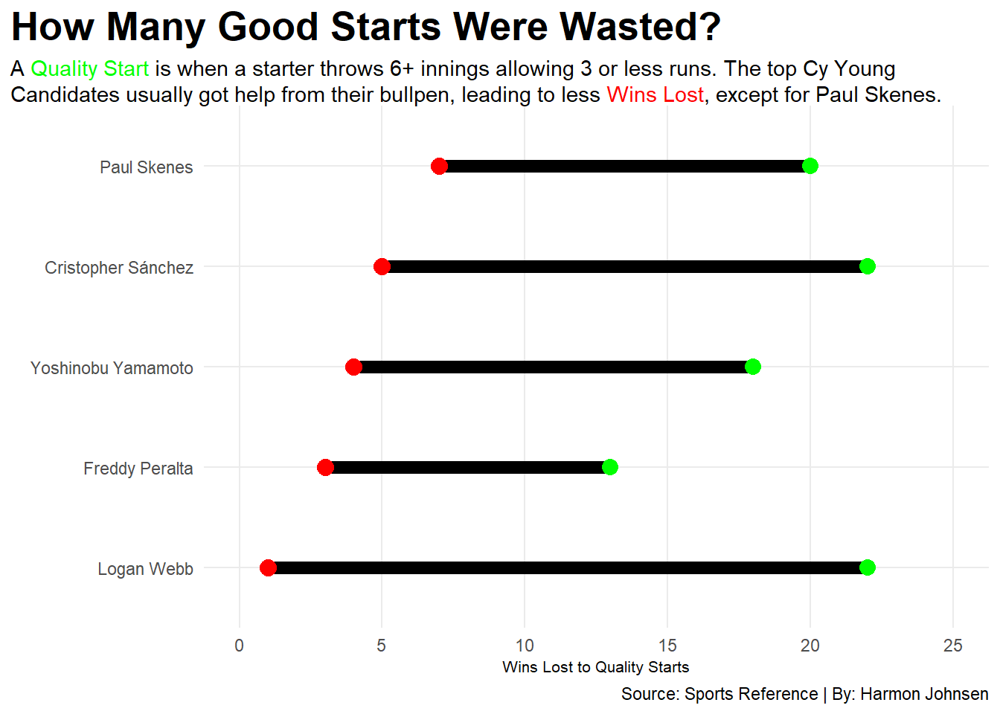
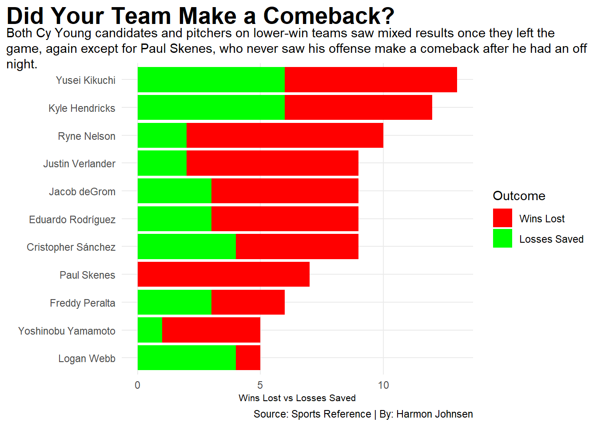
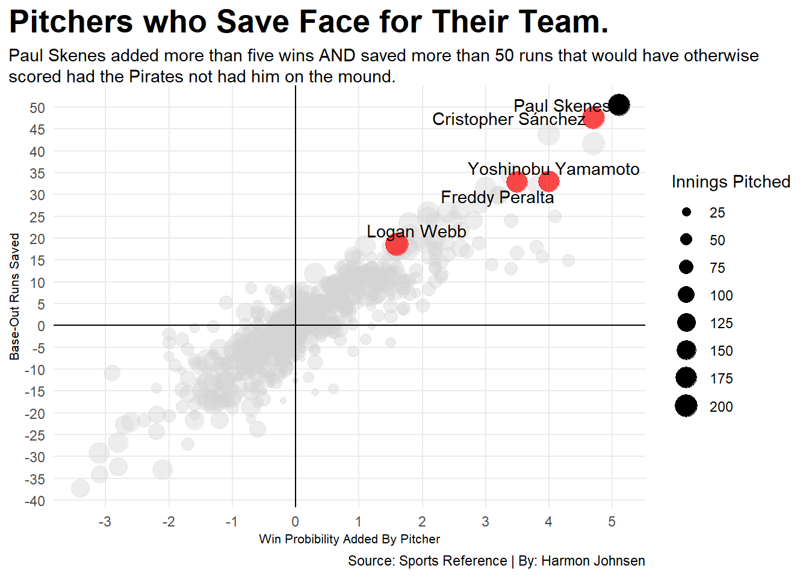

Wins Weren’t Everything for Paul Skenes’ Cy Young Victory
baseball
mlb
paul skenes
pittsburgh pirates
Author
Harmon Johnsen
Published
December 5, 2025
Most casual baseball fans from past decades would probably agree that one of the key components to tell if a starting pitcher was worthy of postseason awards, or even just doing his job properly was by simply looking at their win-loss ratio. If that pitcher had a high win/low loss ratio, they were usually regarded as a good, or great, arm. Reverse that, and they likely wouldn’t be pitching in the MLB very long.
But that was past decades, and starting pitchers continue to exit earlier and earlier in games they begin. To qualify for a win, a starter must throw at least five innings and exit the game with the lead, as well as rely on his team to hold that lead. That works great for pitchers who can go seven innings, knowing there is less likelihood his bullpen will blow his good start. That is, until that pitcher goes six, seven, or more innings allowing only one fluke solo home run, but still fails to qualify for the win because he got no help.
Enter this year’s Cy Young Winner, Paul Skenes of the Pittsburgh Pirates. Skenes made himself known around the 2024 All-Star game, going on to win National League Rookie of the Year for that season before being just as dominant, maybe more, in the 2025 campaign. Unfortunately for Skenes, the Pirates gave him no chance at the postseason to go along with his first (of likely many) Cy Young awards, going to the top pitcher in each league.
Skenes simple pitching line looked like this: 10-10 W-L, 1.97 ERA (best in baseball), 32 Games Started, 187.2 Innings Pitched, 216 Strikeouts (10.4 strikeouts for every 9 innings thrown), and 7.7 Wins Above Replacement (WAR). Right away, the 10-10 record sticks out like a sore thumb compared to his other stellar stats that secured his Cy Young victory. As mentioned earlier, a starting pitcher has only so much control on whether they earn a win.
MLB tracks an advanced metric called “Wins Lost,” which is given to a pitcher any time they were in line for the win in a game but the bullpen blew the lead (no matter how large or small).
Code
library(tidyverse)library(ggalt)library(ggtext)library(ggrepel)library(janitor)starters <-read_csv("player_starting_pitching_25.csv")fixed_starters <- starters |>mutate(Name =gsub("*","", Name, fixed=TRUE)) |>mutate(Name =gsub("#", "", Name, fixed=TRUE))cy_young <- fixed_starters |>filter( Name =="Paul Skenes"| Name =="Cristopher Sánchez"| Name =="Yoshinobu Yamamoto"| Name =="Logan Webb"| Name =="Freddy Peralta" )bums_and_cys <- fixed_starters |>filter( Name =="Ryne Nelson"| Name =="Yusei Kikuchi"| Name =="Paul Skenes"| Name =="Justin Verlander"| Name =="Jacob deGrom"| Name =="Kyle Hendricks"| Name =="Eduardo Rodríguez"| Name =="Cristopher Sánchez"| Name =="Yoshinobu Yamamoto"| Name =="Logan Webb"| Name =="Freddy Peralta" ) |>select(Name, Wlst, Lsv) |>pivot_longer(cols =-Name, names_to ="stat", values_to ="total") |>mutate(stat =factor(stat, levels =c("Wlst", "Lsv")) )ggplot() +geom_dumbbell(data=cy_young,aes(y=reorder(Name, Wlst), x=QS, xend = Wlst),colour ="black",colour_x ="green",colour_xend ="red",size =3 ) +scale_x_continuous(limits =c(0, 25),breaks =c(0, 5, 10, 15, 20, 25) ) +labs(x ="Wins Lost to Quality Starts",y ="",title="How Many Good Starts Were Wasted?", subtitle ="A <span style = 'color:green;'>Quality Start</span> is when a starter throws 6+ innings allowing 3 or less runs. The top Cy Young Candidates usually got help from their bullpen, leading to less <span style = 'color:red;'>Wins Lost</span>, except for Paul Skenes.",caption="Source: Sports Reference | By: Harmon Johnsen" ) +theme_minimal() +theme(plot.title =element_text(size =20, face ="bold"),axis.title =element_text(size =8), plot.subtitle =element_textbox_simple(), panel.grid.minor =element_blank(),plot.title.position ="plot" )

Paul Skenes had seven wins erased from his record due to the opposing teams either tying the game or taking the lead after Skenes was done for the day, in line for the win! Something to note, Skenes was third among his fellow Cy Young candidates in Quality Starts, only behind Logan Webb of the San Francisco Giants and Christopher Sánchez of the Philadelphia Phillies, the latter of whom qualified for the playoffs. Webb probably had to buy the Giants bullpen a steak dinner, since they only lost one of the games in was in line for the win in.
Skenes fellow arms in the Pittsburgh bullpen may not have helped him, but there is a whole other side to the ball to factor in now. Skenes couldn’t always have a quality start, he is human after all. On the days where Skenes was not at the top of his game, did he get lucky and have a loss erased from his record? There’s a stat for that too: “Losses Saved,” which is essentially the reverse of “Wins Lost.” “Losses Saved” tracks times a pitcher was in line for the loss but did not get tagged with it due to a tie or his team taking the lead once he was out of the game.
Code
ggplot() +geom_bar(data = bums_and_cys, aes(x=reorder(Name, total), weight = total, fill = stat)) +scale_fill_manual(name ="Outcome", values =c("red", "green"),labels =c("Wins Lost", "Losses Saved") ) +coord_flip() +labs(x ="",y ="Wins Lost vs Losses Saved",title="Did Your Team Make a Comeback?", subtitle ="Both Cy Young candidates and pitchers on lower-win teams saw mixed results once they left the game, again except for Paul Skenes, who never saw his offense make a comeback after an off night.",caption="Source: Sports Reference | By: Harmon Johnsen" ) +theme_minimal() +theme(plot.title =element_text(size =20, face ="bold"),axis.title =element_text(size =8), plot.subtitle =element_textbox_simple(), panel.grid.minor =element_blank(),plot.title.position ="plot" )

Well that’s ugly for Paul Skenes. Not once did his offense come back from behind, meaning in all 10 of Skenes’ losses, his offense scored less runs than he allowed. For a pitcher that allowed only 41 earned runs in 32 games (hence the sub-two ERA), that is pathetic. On average, Paul Skenes allowed only two runs each start, and the Pirates offense could never get him more than that when he deviated from his average. Add in the 3.4 runs per game of support he got from the bats (the lowest among Cy Young candidates by nearly a full run), and it becomes clear why Skenes’ record was 10-10.
So then why did Skenes win the Cy Young? Besides leading the MLB in ERA, WHIP (walks+hits per innings pitched), and strikeouts per nine innings, his value to his team was unbelievable.
Code
advanced_players <-read_csv("player_advanced_pitching_25.csv")fixed_advanced <- advanced_players |>mutate(Player =gsub("*","", Player, fixed=TRUE)) |>mutate(Player =gsub("#", "", Player, fixed=TRUE)) cy <- fixed_advanced |>filter( Player =="Cristopher Sánchez"| Player =="Yoshinobu Yamamoto"| Player =="Logan Webb"| Player =="Freddy Peralta")paul <- fixed_advanced |>filter( Player =="Paul Skenes" )ggplot() +geom_point(data = fixed_advanced, aes(x=WPA, y=RE24, size=IP), alpha = .4, color ="lightgray") +geom_point(data = cy, aes(x=WPA, y=RE24, size=IP), alpha = .7, color ="red") +geom_text_repel(data = cy, aes(x=WPA, y=RE24, label=Player)) +geom_point(data = paul, aes(x=WPA, y=RE24, size=IP), color ="black") +geom_text_repel(data = paul, aes(x=WPA, y=RE24, label=Player)) +geom_vline(xintercept =0) +geom_hline(yintercept =0) +scale_size_continuous(name="Innings Pitched",range =c(.1, 6.5),breaks =c(25, 50, 75, 100, 125, 150, 175, 200, 225) ) +scale_x_continuous(breaks =c(-4, -3, -2, -1, 0, 1, 2, 3, 4, 5, 6) ) +scale_y_continuous(breaks =c(-40 ,-35, -30, -25, -20, -15, -10, -5, 0, 5, 10, 15, 20, 25, 30, 35, 40, 45, 50, 55)) +labs(x ="Win Probibility Added By Pitcher",y ="Base-Out Runs Saved",title="Pitchers who Save Face for Their Team.", subtitle ="Paul Skenes added more than five wins AND saved more than 50 runs that would have otherwise scored had the Pirates not had him on the mound.",caption="Source: Sports Reference | By: Harmon Johnsen" ) +theme_minimal() +theme(plot.title =element_text(size =20, face ="bold"),axis.title =element_text(size =8), plot.subtitle =element_textbox_simple(), panel.grid.minor =element_blank(),plot.title.position ="plot" )

Skenes essentially allowed the Pirates to earn the 71 wins they had instead of approximately 66 they would have earned without him. Take away Skenes and, without adding anyone else back in, the Pirates pitching staff would have allowed almost 700 runs, instead of the 645 they actually allowed (still not very good).
If not for the unicorn Shohei Otahni, Skenes probably should have won MVP of the National League with just how valuble he was to the limited success of the Pirates. Now imagine if he was on that Dodgers’ pitching staff with Otahni, fellow Cy Young candidate Yoshinobu Yamamoto, and former Cy Young winner Blake Snell. Woof. The Dodgers (or whatever team Skenes could go to), see an immediate boost of around five wins, which for some teams is the difference last season from a chance at the World Series and an early start in Cancun.
It might be time to ditch win-loss records for pitchers altogether. But for Paul Skenes this year, it didn’t matter what his record was. He took the mound every five days, shoved, and left quietly, most likely fuming knowing that without him, his squad would be completely forgotten and stuck in the mediocre hell that is a 162 game season below a .500 winning percentage.